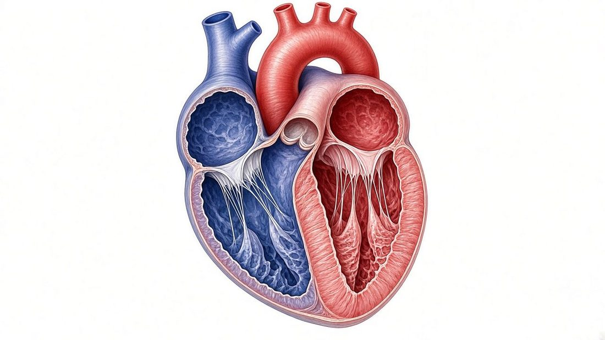

第 14 章 · 心脏与循环Chapter 14
14.2四个腔、两条路Four chambers, two circuits

1234567- 1右心房 Right atrium
- 2右心室 Right ventricle
- 3左心房 Left atrium
- 4左心室 Left ventricle
- 5室间隔 Septum
- 6主动脉 Aorta
- 7上腔静脉 Superior vena cava
心脏分左右两半，中间有隔膜（septum）隔开，左右的血不相混。每一半上面是心房（atrium），负责收血；下面是心室（ventricle），负责往外泵。
The heart has left and right halves, separated by the septum so their blood does not mix. Each half has an upper atrium that receives blood and a lower ventricle that pumps it out.
血流一圈要过心脏两次。右心把全身回来的缺氧血送进肺，叫肺循环（pulmonary circulation）；左心把肺里回来的富氧血送往全身，叫体循环（systemic circulation）。
Blood passes through the heart twice per lap. The right heart sends oxygen-poor blood from the body to the lungs (pulmonary circulation); the left heart sends oxygen-rich blood from the lungs to the body (systemic circulation).